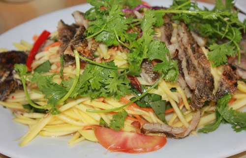

Gỏi khô cá sặc

Nguyên Liệu:
- Dưa leo: 2 quả
- Dứa: 1 quả
- Bánh mì gối: 2 con
- Cà rốt: 1 củ + ớt + hành tím + đậu phộng rang
- Chanh + ớt
- Nước mắm + đường + muối
Cách làm:
Bước 1:
- Cá sặc nướng chín khô hoặc cho cá vò lò vi sóng quay khoảng 1 phút rồi trở mặt bên của cá khoảng 1 phút cho chín đều. Nướng xong
để cá nguội, rồi xé nhỏ để riêng ra đĩa.
Bước 2:
- Tiếp tục thực hiện hướng dẫn làm gỏi khô cá sặc, rửa sạch dưa leo ngâm qua với nước muối pha loãng. Vớt dưa ra rổ để ráo nước rồi cắt đôi quả,
nạo bỏ phần ruột, thái miếng mỏng vừa.
- Cà rốt gọt vỏ, rửa sạch rồi bào sợi nhỏ.
- Dứa thái miếng nhỏ, rồi cho vào trộn đều cùng cà rốt và dưa leo.
Bước 3:
- Cho cá sặc đã xé nhỏ vào bát đựng cà rốt, dưa leo, dứa trộn đều.
- Bắc chảo lên bếp, cho dầu đun nóng già, cho hành vào phi thơm. Tiếp theo cho ngò thái nhuyễn vào đảo đều.
Bước 4:
- Pha nước mắm theo tỷ lệ sau: Cho chanh, nước mắm, đường, tỏi, ớt = 1:3:2:1:1 vào bát khuấy đều cho tan gia vị. Nêm nếm gia vị vừa ăn.
Bước 5:
- Bày gỏi ra đĩa, rắc đậu phộng lên trên cùng chút rau thơm và thưởng thức.